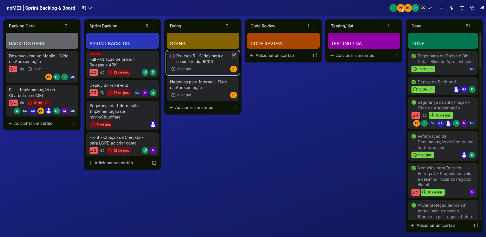
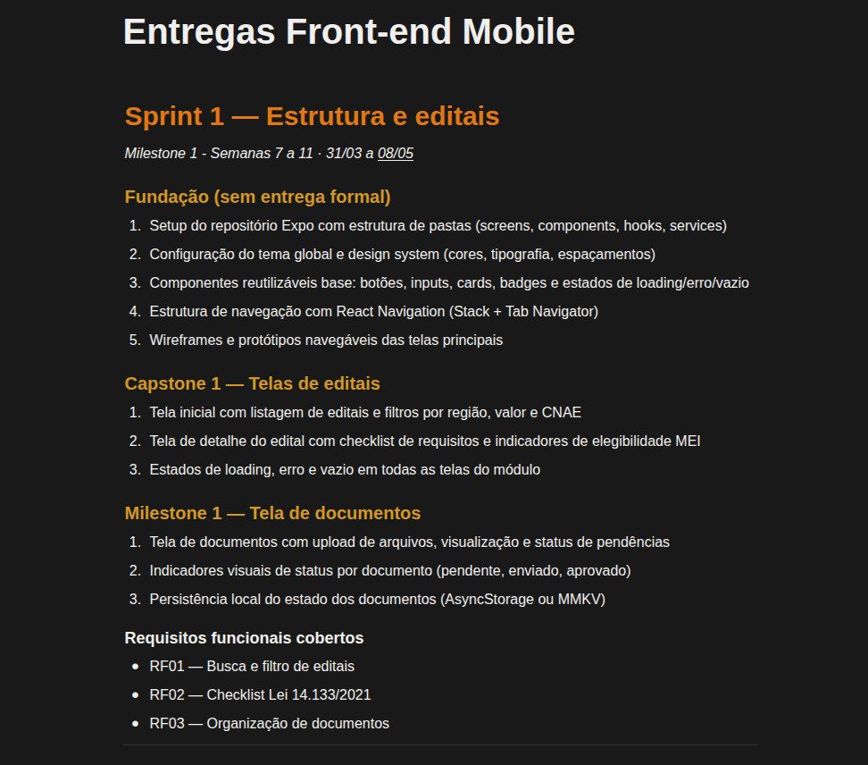

Papel Executado no Projeto Integrador
No Projeto Integrador atuei de forma na interpretação de requisitos e no desenvolvimento Front-end da nossa aplicação. Atuai a ferente da equipe de desenvolvimento frontend, estabelecendo requisitos técnicos, desing base da aplicação e na organização dos objetivos de cada sprint de desenvolvimento.
Desenvolvimento Técnico: Definição da fundação do padrão visual da aplicação noMEI estabelecendo identidade visual, cores, components reutilizáveis e a organização de pastas do front-end.
Liderança (equipe Front-end): Responsável organizar as atividades por sprint (scrum), delegar atividades e validar consistencia entre as telas baseado no padrão visual estabelecido.
Entregas e Colaboração
O desenvolvimento do projeto ocorreu sob metodologias ágeis (Scrum/Kanban) com sprints de 15 dias, iterações curtas e reuniões periódicas para alinhamento técnico entre as partes envolvidas no projeto.
Nossas principais entregas englobaram o mapeamento dos requisitos obrigatórios, protótipos navegáveis de alta fidelidade, diagramação lógica do banco de dados, criação da arquitetura de Back-end para consumo da API pública do PNCP e a integração entre front-end, back-end e pipeline de dados.
Gestão Visual do Fluxo
Para coordenar o trabalho da equipe multidisciplinar (fron-end, back-end e product owner) utilizamos um fluxo transparente e centralizado em duas ferramentas principais:
- Trello: Utilizado como quadro Kanban dinâmico para acompanhamento das atividades da sprint: Sprint Backlog, Doing, Code Review, Testing, Done. facilitando a visualização de gargalos e dependências.
- Notion: Centralizador da documentação do projeto, contendo links importantes ( Protótipo navegável, Trello, repositório principal) documentação das demais disciplinhas, anostações das reuniões e agrupamentos dos materiais de Apresentação.


Dificuldades Enfrentadas e Organização
Desafios Encontrados
- Transição Rápida de Contexto: Conciliar a rotina de estágio, aulas da Graduação, tarefas da iniciação e, principalmente, atender aos requisitos de todas as disciplinas.
- Gerenciamento de Escopo: Filtrar as demandas dinâmicas de cada disciplina e definir requisitos funcionais que seriam implementados durante o semestre, mantendo o foco nas entregas viáveis de MVP.
- Liderança Técnica: Tomar a frente da equipe de fron-end foi um Desafio durante a gradução eu ainda não tinha me colocado na posição de liderança. Foi desafiador criar a base para o MVP, estabelecer os requisitos,atribuir tarefas e tomar responsabilidade pelas entregas.
Estratégias de Organização
- Uso de Planner Pessoal: utilizei uma planner diário para definir compromissos e alocacar blocos de tempo em certos dias na semana para executar cada tarefa.
- Notion de Conhecimento Centralizado: Criação de páginas dedicadas no Notion para anotações das disciplinas e registros atividades da minha equipe, evitando perda de dados e acelerando a retomada do foco.
- Sprints e Daily Status: O alinhamento das tarefas foi realizado de maneira assíncrona devido aos horários e responsabilidades individuais de cada membro. Contudo, ainda assim tinhamos reuniões gerais que ocorriam as segundas e terças-feiras (durante o horário da disciplina de projetos 5).
Reflexões sobre Soft Skills
Comunicação Assertiva
O papel de porta-voz técnico forçou a superação de uma postura mais introvertida nas reuniões e finais de sprints. Aprendi a me comunicar melhor com a equipe e professores, mesmo sem te muita afinidade. Até o final do período me senti mais livre para expor as minhas opniões e adotar o que foi decidido em conjunto.
Colaboração
Os subgrupos que foram divididos em minha equipe (front-end, back-end, engenharia de dados e product owner) tornou a atuação mais alinhada com o que eu acho que exista no mercado de trabalho. Assim, eu estava ciente em qual parte do projeto era a de minha maior responsabilidade e quais pessoas eu deveria contatar para para as outras partes do projeto caso necessário.
Escuta Ativa e Empatia
Nas reuniões de fechamento de sprint, exercitei a escuta ativa para acolher feedbacks dos meus companheiros de equipe. Entender a real prioridade e as dificuldades de cada me ajudou a ouvir mais o que foi realizado e aguardar o meu momento de fala. Além disso, me fez tocar maior reflexão das situações e levantar pontos mais relevantes.
Interação de conhecimentos
Percebi que os conhecimentos passados nas aulas de Desenvolvimento Mobile, Negócios para a internet, Projetos 5 e Iniciação Cientifica contribuiram para melhorar o meu pensamento a cerca do negócio e também tem noção mais técnica para o desenvolvimento. Também enfarizo que as técnicas de organização e priorização de atividades contibuiram para um rotina mais organizada e com menos procrastinação.